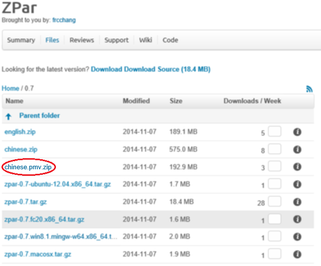

Using ZPar-MVT Off-the-Shelf
Overview
ZPar for MVT (Peking University Multi-view Chinese Treebank) is compiled into a program: zpar.mvt. This program needs to be executed with a set of corresponding statistical models. Some example sets of models are released together with ZPar source so that the public release can be used off-the-shelf.
The current version of ZPar is 0.7. Its release contains a set of models for zpar.mvt, which support joint Chinese word segmentation and POS tagging, and labeled dependency parsing.
Download and installation
The source code and models can be downloaded from sourceforge. Unzip the source zip file into the source directory and the corresponding model files each into a model directory.
Download the models for ZPar-MVT:

To compile ZPar-PMT, type make zpar.mvt in the zpar source directory. The binary file zpar.mvt will placed in the dist folder.
Usage of ZPar for Chinese-MVT
Suppose that the executable files are saved in the folder zpar/dist/zpar.mvt and the models are saved in chinese.mvt. To run zpar, type
zpar/dist/zpar.mvt chinese.mvt input output
to read Chinese sentences from the input and write the corresponding parses to output. In the file input, each line should contain only one sentence.
Annotation Schema
The annotation schema for word segmentation, POS tagging and dependency parsing is described in our COLING2014 paper (see in Reference). It is based on the annotated corpus of People' Daily of Peking University and quite different from CTB. For details, please refer to our paper.
Reference
- Likun Qiu, Yue Zhang, Peng Jin, and Houfeng Wang. 2014. Multi-view chinese treebanking. In Proc of COLING, pages 257–268.
- Yue Zhang and Stephen Clark. 2011. Syntactic Processing Using the Generalized Perceptron and Beam Search. Computational Linguistics, 37(1), March.